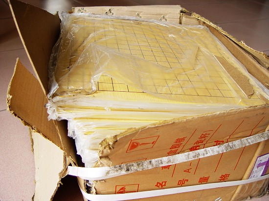
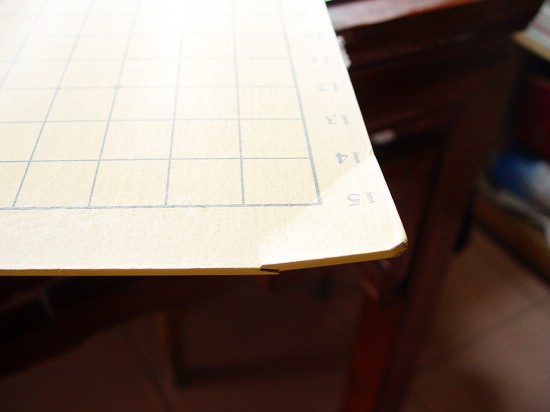
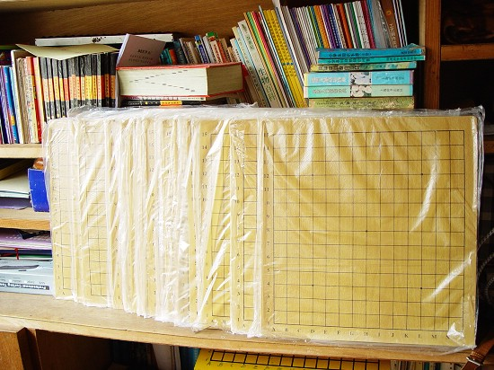

棋盘终于到了
首页
江苏五子棋
#1 棋盘终于到了 作者：有志青年 发表时间：2007-4-2 16:22:45
为这次区中小学生五子棋比赛购置的棋盘〔80块〕历经2周〔货运误点本来一周到〕，终于到了。
刚到家，拍了几张照片。

毕竟两周呀，外包装损坏严重，上面还有污泥。
有损失是一定的，这在我的意料之中

这棋盘只能我留在家里和小树用了

当然大部分都是好的，每一张棋盘都有一个塑料袋包装着，照片下放横放的棋盘是我自己在木头上画的〔纯手工制作，照片：ShowPost.asp?ThreadID=607〕
过几天就送到各个学校，力求五子棋真正在中小学校中普及。
［ 啊呆 于 2012-5-15 13:06:35 时花20金币送鲜花一朵］
［ 啊呆 于 2012-5-15 13:06:45 时花20金币送鲜花一朵］
［ 啊呆 于 2012-5-15 13:06:59 时花20金币送鲜花一朵］
［ 啊呆 于 2012-5-15 13:07:30 时花20金币送鲜花一朵］
［ 啊呆 于 2012-5-15 13:07:43 时花20金币送鲜花一朵］
［ 清风明月月 于 2012-5-16 16:12:55 时花20金币送鲜花一朵］
［ 清风明月月 于 2012-5-16 16:13:19 时花20金币送鲜花一朵］
#2 Re:棋盘终于到了 作者：江南新绿 发表时间：2007-4-2 17:05:21
有志的五子棋棋盘好漂亮啊。
#3 Re:棋盘终于到了 作者：黄药师 发表时间：2007-4-2 19:47:16
我们学校10块！
#4 Re:棋盘终于到了 作者：gerbo 发表时间：2007-4-2 20:33:45
这么高级的棋盘，我想都没想过啊，坏了几块，我看着也心痛．
#5 Re:棋盘终于到了 作者：黄药师 发表时间：2007-4-2 22:52:05
哈哈，明天就到手了，有志辛苦，俺们学生有了战斗的武器会更用功的！
#6 Re:棋盘终于到了 作者：行云流水 发表时间：2007-4-3 12:45:57
祝贺！
#7 Re:棋盘终于到了 作者：daiyue 发表时间：2007-4-3 14:25:39
嗯，多少厚的？
#8 Re:棋盘终于到了 作者：黄药师 发表时间：2007-4-3 22:22:21
今天早上看到有志踏着二轮车送棋盘，那个感动啊！
#9 Re:棋盘终于到了 作者：二十七刀 发表时间：2007-4-22 11:37:20
支持，祝贺！
#10 Re:棋盘终于到了 作者：joyly 发表时间：2007-5-31 14:35:47
切切碎碎
#11 Re:棋盘终于到了 作者：凝霜若雪 发表时间：2007-7-1 20:02:59
个有得多?匀一个给我?
#12 Re:棋盘终于到了 作者：黄药师 发表时间：2012-5-10 23:06:43
半夜看旧帖，回顾南通五子棋走过的5年，感叹不已！
#13 Re:棋盘终于到了 作者：冰雪笑醉 发表时间：2012-5-10 23:22:11
 挖出来的呀，，看了这个棋盘做的不错呀，明天也叫木工做幅玩玩~
挖出来的呀，，看了这个棋盘做的不错呀，明天也叫木工做幅玩玩~
#14 Re:棋盘终于到了 作者：吴保刚 发表时间：2012-5-15 12:09:22
找个木匠，做点质量好的，还可以收藏。
#15 Re:有志青年【==棋盘终于到了==】 作者：蔡厂长 发表时间：2012-7-23 18:52:20
老师这些棋盘哪里有卖？好想买一个。。。
#16 Re:蔡厂长【==Re:有志青年【==棋盘终于到了==】==】 作者：黄药师 发表时间：2012-7-24 14:47:54
引用：
原文由 蔡厂长 发表于 2012-7-23 18:52:20 :
老师这些棋盘哪里有卖？好想买一个。。。
网上购买，或者直接去厂家订购！
#17 Re:棋盘终于到了 作者：鱼岛岛主 发表时间：2012-8-2 23:29:01
http://shop34187761.taobao.com/
#18 Re:棋盘终于到了 作者：黯然酸楚 发表时间：2012-12-19 14:22:11
这么多
#19 Re:棋盘终于到了 作者：悟石 发表时间：2013-4-11 16:33:19
目测是5mm贴面棋盘